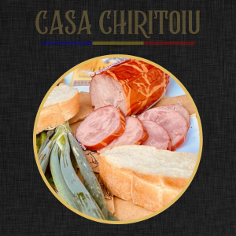
150g VidSalam Victoria Artizanal
3.90 €Rețetă tradițională curată, carne macră de porc din Piemonte cu conținut redus de grăsime. Ambalat proaspăt la vid.
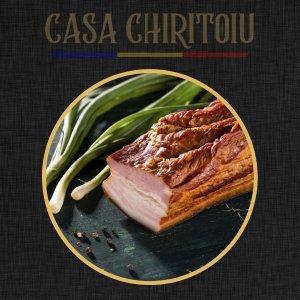
150g VidKaizer Țărănesc Afumat
4.20 €Piept de porc selecționat, marinat cu condimente naturale și afumat lent la lemn de fag în laboratorul propriu.
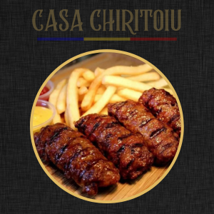
Caserolă 500gMicii Tradiționali Casa Chirițoiu
6.50 €Pastă de mici proaspătă din carne tocată de calitate superioară, marinată cu usturoi și mirodenii. Pregătiți pentru grătar.
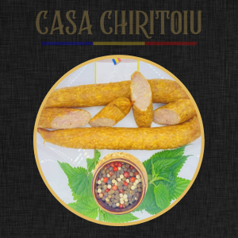
150g VidCârnați Țărănești la Lemn
4.50 €Cârnați uscați și afumați tradițional la fum din lemn de fag. Perfecți pentru gustare sau platouri tradiționale.
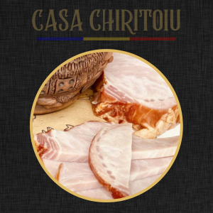
150g VidMușchi File Afumat
4.80 €Cotlet de porc fraged, fără grăsime, marinat în saramură cu mirodenii și afumat fin.
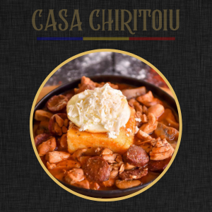
Borcan 400gCarne la Garniță Tradițională
8.90 €Bucăți fragede de carne și cârnați prăjiți la ceaun și conservați în untură curată. Gata de încălzit în 5 minute.
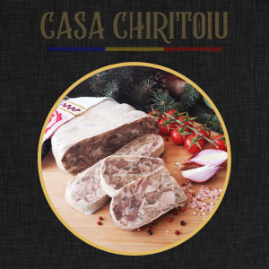
150g VidTobă Tradițională Afumată
4.20 €Preparat tradițional din bucăți alese de porc, condimentat cu usturoi și mirodenii, afumat ușor la lemn.
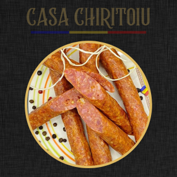
150g VidCârnați Moldovenești de Casă
4.50 €Rețetă autentică de la Huși. Carne tocată la satâr, marinată cu cimbru și usturoi, afumată la fag.
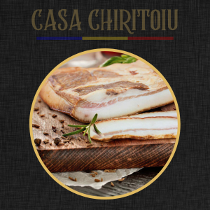
150g VidSlănină Afumată cu Boia
3.80 €Slănină fragedă de porc din Piemonte, fragedă, maturată în saramură și frumos boiată cu boia dulce.
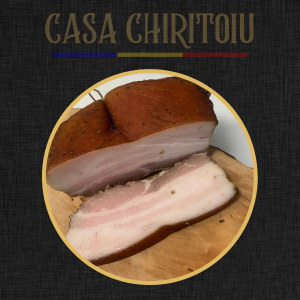
150g VidȘunculița Boierului
4.60 €Specialitate fină din piept de porc fără os, marinat și afumat la rece. Se topește în gură.
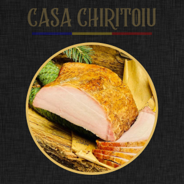
150g VidPastramă Tradițională de Porc
4.90 €Bucăți alese de porc maturate în condimente ardelenești și afumate lent la fum natural.
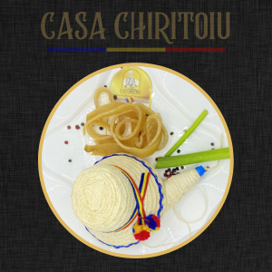
150g VidȘorici Fraged de Porc
3.50 €Șorici curățat impecabil, fraged și curat, ușor sărat. O gustare tradițională crocantă și delicioasă.